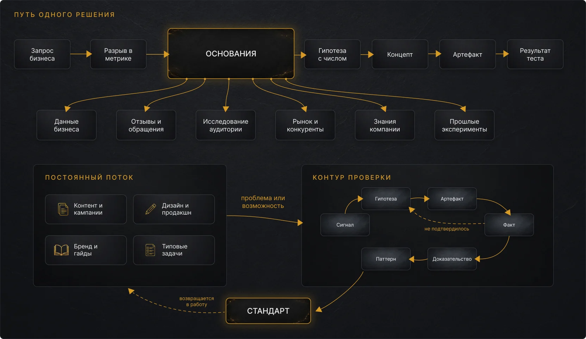
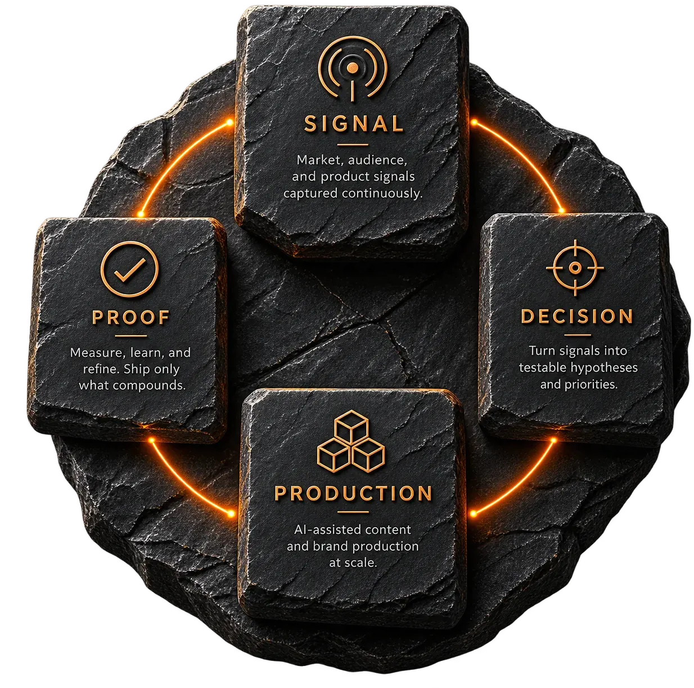

[EN: Метод]
How a decision gets made
-
Signal
[EN: Норма по каждому типу работы посчитана по истории. Часы или круги правок выше нормы — сигнал. Так же подсвечиваются формат, потерявший отклик, и точка контакта с провалом по метрике.]
-
Evidence
[EN: Под сигнал поднимаются основания: задачи категории, шаги задачи и ожидаемые результаты, группы аудитории и чем занята категория у конкурентов. Из них видно, где именно просело.]
-
Goal and hypothesis
[EN: Из сигнала ставится измеримая цель на конкретном узле и раскладывается на ключевые результаты. Внутри цели — исследование, гипотезы и концепты, которые из них выросли.]
-
Production
[EN: Концепт уходит в задачи: исполнитель, срок, красный флаг по просрочке, план и факт часов. Отсюда же берётся норма для следующего сигнала.]
-
Release
[EN: Материал выходит наружу и попадает в базу релизов: канал, дата, версия. Каждый релиз связан со своим материалом и целью, к нему и подтягиваются метрики.]
-
Response and standard
[EN: Статистика приходит в базу фактов с источником и периодом и поднимается в ключевые результаты. Подтвердившееся закрепляется нормой в типовой задаче.]

